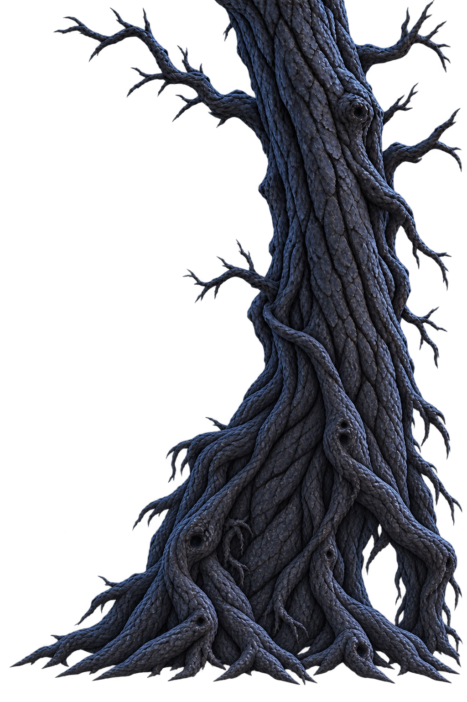
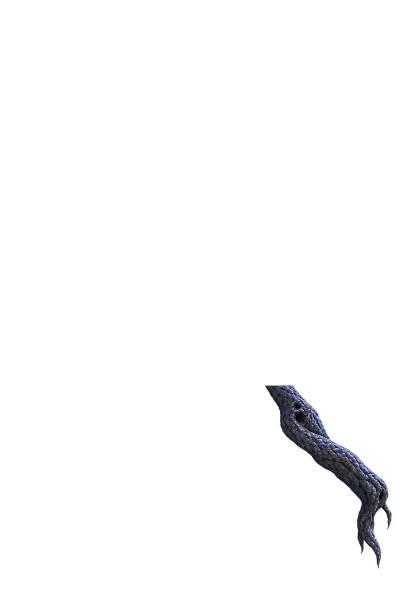

컨셉의 시작 구역

통로 수정본과 캐릭터 크기 참고







큰 중앙 아치를 없애고 오른쪽 하단의 불규칙한 뿌리 틈으로 수정했습니다. 캐릭터 위치 조절은 시각 검토용이며 실제 이동·충돌 테스트가 아닙니다.


뒤쪽 몸통 → 플레이어 → 앞쪽 테두리 순서. 입구 안쪽은 실제 투명 영역으로 숲이 보입니다. 기존 고목용 눈은 형태가 달라 제외했습니다.
컨셉 좌상단 640×480에서 인물 높이를 약 24~28px로 육안 추정 → 비교 목표 26px(화면 높이 5.42%). Run_00 실제 불투명 그림 높이 336px 기준으로 환산했습니다. 이전 시안은 같은 범위에서 약 74.3px로 약 2.86배 컸습니다. Unity Scale 확정값이 아닙니다.남은 차이: 컨셉의 눈·바위·등반 발판은 아직 포함하지 않았습니다. 현재는 고목 구조와 화면 내 캐릭터 비율을 비교합니다. 바닥선 위치는 임시값입니다.
바닥과의 접합, 최종 카메라 크기, 충돌·점프와 구역 연결은 Unity에서 검증해야 합니다.